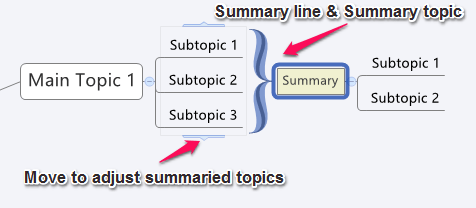
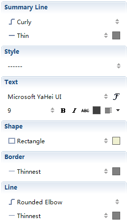

要約
要約はトピックの簡単な説明であり、閲覧者に主要なポイントを強調表示し、素早く内容を把握してもらうために使用します。
要約の追加:
- 要約に追加する対象となるトピックを選択します。
- 次の方法で使用して要約を作成できます。
- ショートカット キーの「Ctrl +]」を押して、要約を追加します。
- マウスを右クリックし、コンテキストメニューから[挿入]→[要約]を選択します。
- メニューから[挿入]→[要約]を選択します。
- 要約トピックを直接入力して編集します。
- 要約トピックにサブトピックを作成するには「Tab」キーをクリックします。
- 要約ボックスの上下をスライド移動させ、要約の対象を変更します。

要約プロパティの変更:
- 要約を選択し、プロパティビューを開きます。
- 次のプロパティを変更できます。
- 要約の、線のスタイル、色。
- 要約トピックの、テキスト書式、ライン、ボックスの形状、スタイルなど。

要約を削除する:
- 要約を選択し、キーボードの「Del」を押します。